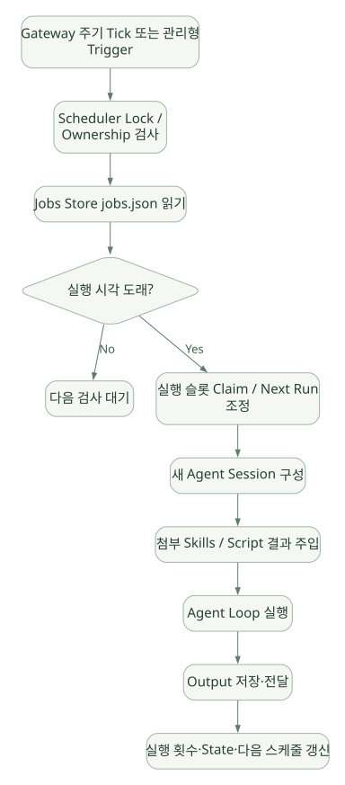

SECOND STUDY / Gateway와 예약 실행
Gateway와 예약 실행
이번 단원의 읽는 관점
세션 정본의 쓰기 소유권과 요청·Run·Stream의 수명을 읽습니다. Cron은 예약 시각에 새 Agent Session을 시작합니다.
살펴볼 경계스케줄 슬롯 Claim, 실행 성공, 결과 Delivery와 외부 효과 exactly-once를 구분하세요.
이 페이지의 세부 목차
16. Cron: 언제 실행되고 무엇을 재실행하는가?#
16.1 Cron은 단순 타이머가 아니다#
Cron은 특정 시간/간격에 작업을 시작하게 하는 스케줄링 메커니즘이다. Hermes가 제공하는 Cron의 특징은 Shell 명령만 예약하는 것이 아니라, 새로운 Agent Session을 생성하여 LLM과 Tool Loop를 실행하는 것이다.
[DOC] 현재 공식 문서는 상대 지연, 반복 간격, 표준 5필드 Cron Expression, ISO 시각 등 네 가지 스케줄 표현을 설명한다. 모델에는 cronjob_manage가 노출되며 create/list/update/pause/resume/run/remove 등의 동작을 처리할 수 있다.
문서: https://hermes-agent.nousresearch.com/docs/developer-guide/cron-internals
16.2 Cron Scheduler의 핵심 구조#
가로로 이동해서 읽을 수 있습니다. 도식 크게 보기 ↗

원문의 학습용 도식입니다. 연결 방향·분기 조건·점선·쌍방향 연결을 보존해 세로로 배치했습니다. 실제 구현·의사코드·해석의 구분은 본문을 함께 읽으세요.
도식 원문 보기 (Mermaid)
flowchart TD
T[Gateway 주기 Tick 또는 관리형 Trigger] --> L[Scheduler Lock / Ownership 검사]
L --> J[Jobs Store jobs.json 읽기]
J --> D{실행 시각 도래?}
D -->|No| Z[다음 검사 대기]
D -->|Yes| K[실행 슬롯 Claim / Next Run 조정]
K --> N[새 Agent Session 구성]
N --> S[첨부 Skills / Script 결과 주입]
S --> A[Agent Loop 실행]
A --> O[Output 저장·전달]
O --> U[실행 횟수·State·다음 스케줄 갱신]코드 지도:
| 소스 | 책임 |
|---|---|
cron/jobs.py |
Job 레코드, 저장, 시간 계산, Claim·무결성 |
cron/jobs_time.py |
Timezone 및 Grace 처리 |
cron/scheduler.py |
Tick, Due Scan, Dispatch, 실행 및 Delivery |
tools/cronjob_tools.py |
모델에게 제공할 Cron 관리 Tool |
gateway/run.py |
Gateway 장기 프로세스와 Cron 연결 |
cron/scheduler_provider.py |
기본 또는 관리형 Trigger 선택 계층 |
[SRC] cron/scheduler.py는 Gateway가 Tick을 호출하는 구조와 Cross-process Tick Lock을 기술한다. cron/jobs.py는 jobs.json 저장 및 잠금에 관련된 함수를 포함한다.
코드: https://github.com/NousResearch/hermes-agent/blob/v0.22.5/cron/scheduler.py
코드: https://github.com/NousResearch/hermes-agent/blob/v0.22.5/cron/jobs.py
16.3 왜 새 Session으로 실행할까?#
- 이전 Cron 실행의 대화 이력이 무한 누적되는 문제 감소.
- 동일한 Cron Prompt를 반복 사용할 때 결과의 독립성 강화.
- Task마다 Token·Tool·비용을 별도로 계량할 수 있음.
- 특정 대화에서의 우발적 지시가 다음 Cron 작업으로 이어지는 위험 감소.
주의: 새로운 Session이더라도 영구 Memory와 승인된 Skills는 로드될 수 있다. 따라서 완전히 Stateless하다고 할 수 없다. [DOC]
16.4 Skills 및 Script는 Cron에서 어떻게 들어가나?#
[DOC] Cron에 첨부된 Skill은 지정된 순서로 로딩되며, Script를 설정한 경우 그 Script를 Agent 실행 전에 수행하고 stdout을 작업 입력에 전달할 수 있다.
[Scheduler fires]
-> configured script 실행 (선택)
-> script stdout을 문맥 데이터로 합침
-> 지정된 Skills 지침 로딩
-> Cron Prompt 추가
-> Fresh Agent Loop 실행
-> 저장/전달스크립트 코드 실행 자체는 LLM 이전에 발생할 수 있으므로, LLM용 Tool Approval과 같은 정책이 모든 Script에 자동 적용된다고 생각하지 말 것. Script 실행 주체/권한/Time Budget을 별도로 확인해야 한다.
16.5 중복 실행 방지의 진짜 문제#
[DOC] 현재 Cron 문서는 Tick Lock, Claim, pending_slot, 스케줄 Advance 등을 통해 재시작과 중복 Tick 사이에서 실행 슬롯을 관리하는 방식을 설명한다.
중요한 구분:
| 보장하려는 것 | 의미 | 해결 방법 예 |
|---|---|---|
| At-most-once per occurrence | 동일 예약 시각이 여러 번 시작되지 않도록 | Lock, Claim, Next Run Advance |
| At-least-once delivery | 결과가 반드시 사용자에게 전달되도록 재시도 | Outbox / Delivery Queue |
| Exactly-once side effect | 동일 외부 DB 변경이 중복되지 않게 | 대상 시스템 Idempotency / Transaction |
Hermes Cron 문서의 Occurrence 추적·중복 방지 메커니즘을 외부 시스템 부작용까지 exactly-once 보장한다고 확대 해석하면 안 된다. 실행 성공과 Delivery 성공 역시 다른 이벤트다.
16.6 Cron과 기존 Session을 공유하면 안 되는 이유#
Cron이 사용자 Chat의 현재 열린 메시지들을 임의로 읽고 동작한다면 작업 시각마다 상태가 달라져 재현성이 떨어진다. Fresh Session과 자기완결적인 Prompt/Skill이 좋지만, 필요한 장기 상태는 Memory 또는 DB에 별도 저장해야 한다. [INF]
16.7 다른 프레임워크와 비교할 때의 위치#
- Hermes Cron: Agent 제품 내부의 예약 트리거·Fresh Agent Turn·Delivery 통합.
- OpenAI Agents SDK / PydanticAI: 외부 스케줄러에서 SDK 실행 코드를 주기적으로 호출하는 아키텍처를 만들 수 있음. '기본 Cron이 있다'와 구별.
- Google ADK / Microsoft Agent Framework: Workflow 및 재개 기능이 있더라도 '언제 시작하나'라는 Trigger는 별도 문제.
- Claude Code / Agent SDK: 외부 CI, 작업 관리 서비스, Hook/스케줄링 기능의 연결 방식 확인이 필요.
Cron의 유용성 판단: 정기 점검·알림·자동 보고에는 유용하지만, 이벤트 기반 데이터 처리라면 Webhook/Queue, 긴 작업의 복구에는 Durable Workflow가 더 적합할 수 있다. 기술 선택은 '시간 기반 Trigger가 실제 요구인가?'에서 출발한다.